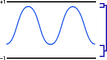

It is good practice to remove any DC bias as a first step when you start editing. Although DC bias is not a problem on its own, it can become a problem during editing. For example, audio with a DC bias becomes clipped more readily than audio without.